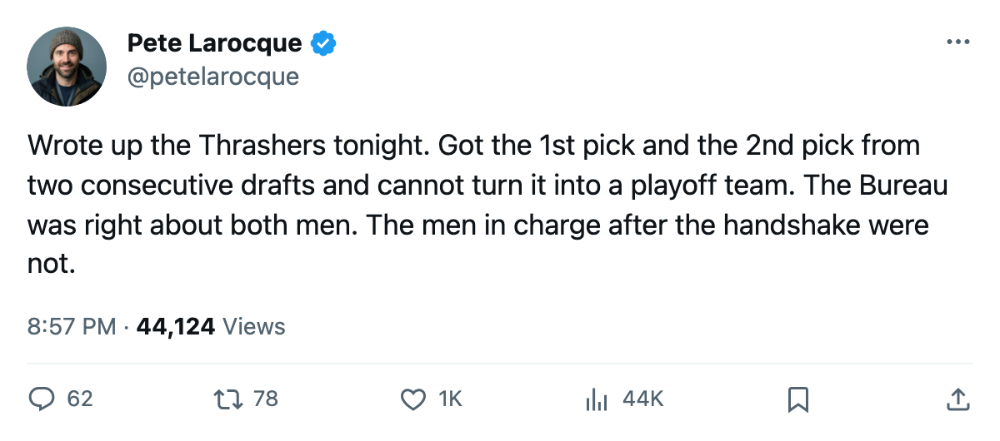
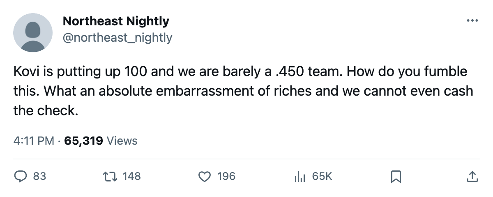

The 1st Pick Has 100 Points and the 2nd Has 92. Atlanta Has 62 Points in the Standings.
Ilya Kovalchuk and Dany Heatley are the top 2 players from the last two drafts. They play for the 4th-place team in the Southeast, 12 points back of Tampa Bay.
 Pete LarocqueScouting editor · The Prospect File
Pete LarocqueScouting editor · The Prospect File
Ilya Kovalchuk

 Ilya Kovalchuk91 has 100 points in 60 games at age 21.
Ilya Kovalchuk91 has 100 points in 60 games at age 21.  Dany Heatley89 has 92 in 57 at age 22. They are the 1st pick from 2001 and the 2nd pick from 2000, they play on the same wing for
Dany Heatley89 has 92 in 57 at age 22. They are the 1st pick from 2001 and the 2nd pick from 2000, they play on the same wing for  Atlanta Thrashers, and Atlanta sits at 62 standings points with a 23-28-2 record. The Southeast Division leader is Tampa Bay at 82. Atlanta is 12 points behind.
Atlanta Thrashers, and Atlanta sits at 62 standings points with a 23-28-2 record. The Southeast Division leader is Tampa Bay at 82. Atlanta is 12 points behind.
I saw Heatley at 2nd overall in June 2000. I had Kovalchuk at 1st in June 2001. The Bureau got those two right. Getting the top of the draft right turns out to be the easy part, and the standings prove it every week.
The 1st Pick's Index says up. His potential says down.
Kovalchuk sits 5th on the Development Index this edition, up 5. The Bureau has his overall at 86 against a base of 89, which means his current form is carrying him below where the Book's base sits. He is scoring 100 points at 21 years old. Nobody in this league under 24 has more.
His potential reads 85, below the overall of 86. In the Book's language, that means the Bureau's development model sees Kovalchuk at or past the point where further growth becomes unlikely. He is 21 and putting up 100 points, and the potential number says the curve is flat.
That is the same signal that told me 12 of the 2004 first-rounders were in trouble three weeks ago, a potential below an overall. At the bottom of the class it meant a bust. At the top it means something else: the best player Atlanta has ever drafted might be peaking at the age when the rest of them are still climbing.
Heatley at 84 overall and 92 points in 57 games is the other half of the same question. The Bureau drafted him 2nd in 2000, behind  Rick DiPietro83. DiPietro is at
Rick DiPietro83. DiPietro is at  New York Islanders with 81 overall and a 99 potential that has not moved yet. Heatley is producing at 92 points at age 22 and he is not the best player on the team that drafted him.
New York Islanders with 81 overall and a 99 potential that has not moved yet. Heatley is producing at 92 points at age 22 and he is not the best player on the team that drafted him.
Nobody else on the roster explains the gap
Atlanta has 208 goals for and 222 goals against. They are outscored. Kovalchuk's 100 points and Heatley's 92 points belong to two men on a team that does not score enough to win games when those two are on the bench, and the goals-against side does not protect a lead.
The standings tell you the rest. Atlanta is 17-14 at home and 13-16 on the road. They are a .462 team, the 1st pick and the 2nd pick, 21 and 22, and the team is under .500.
Gaborik at  Toronto Maple Leafs has 80 points on the Presidents' Trophy leader and a 97 overall that puts him ahead of both Thrashers. Nash at 2002 #1 has 32 points in 50 games. The gap between the top of the 2000-2001-2002 draft and everyone else is wide, and Atlanta got the top twice and has nothing to show for it except two men in their prime on a losing team.
Toronto Maple Leafs has 80 points on the Presidents' Trophy leader and a 97 overall that puts him ahead of both Thrashers. Nash at 2002 #1 has 32 points in 50 games. The gap between the top of the 2000-2001-2002 draft and everyone else is wide, and Atlanta got the top twice and has nothing to show for it except two men in their prime on a losing team.
What Atlanta has left in June
Five picks, one of them in the first round. No extra firsts, nothing held from another club. Atlanta is in the position where the only way to fix the roster around Kovalchuk and Heatley is to develop from inside or trade for help at what the calendar has as the trade deadline, 21 days away.
They cannot tank their way to the next draft because they already own the top. They cannot rebuild around one of the two best young scorers in hockey by finishing last; they are 12 points from a playoff spot. The only path is to win with what is around them, which means finding a defenseman who can keep the goals against near 200 and a center who can feed a 21-year-old with 100 points.
That is not a draft problem. It is a roster-building problem that happens after the draft, which is the part nobody grades.
Kovalchuk leads the league. If he finishes first and Atlanta misses the playoffs, the 1st pick from 2001 will have done his job completely. The team that drafted him will not have done theirs.

